Artificial Intelligence
Artificial Intelligence
TR-4931: Disaster Recovery with VMware Cloud on Amazon Web Services and Guest Connect
 Suggest changes
Suggest changes
Authors: Chris Reno, Josh Powell, and Suresh Thoppay - NetApp Solutions Engineering
Overview
A proven disaster recovery (DR) environment and plan is critical for organizations to ensure that business-critical applications can be rapidly restored in the event of a major outage. This solution focuses on demonstrating DR use cases with a focus on VMware and NetApp technologies, both on-premises and with VMware Cloud on AWS.
NetApp has a long history of integration with VMware as evidenced by the tens of thousands of customers that have chosen NetApp as their storage partner for their virtualized environment. This integration continues with guest-connected options in the cloud and recent integrations with NFS datastores as well. This solution focuses on the use case commonly referred to as guest-connected storage.
In guest-connected storage, the guest VMDK is deployed on a VMware-provisioned datastore, and application data is housed on iSCSI or NFS and mapped directly to the VM. Oracle and MS SQL applications are used to demonstrate a DR scenario, as shown in the following figure.

Assumptions, pre-requisites and component overview
Before deploying this solution, review the overview of the components, the required pre-requisites to deploy the solution and assumptions made in documenting this solution.
Performing DR with SnapCenter
In this solution, SnapCenter provides application-consistent snapshots for SQL Server and Oracle application data. This configuration, together with SnapMirror technology, provides high-speed data replication between our on-premises AFF and FSx ONTAP cluster. Additionally, Veeam Backup & Replication provides backup and restore capabilities for our virtual machines.
In this section, we cover the configuration of SnapCenter, SnapMirror, and Veeam for both backup and restore.
The following sections cover configuration and the steps needed to complete a failover at the secondary site:
Configure SnapMirror relationships and retention schedules
SnapCenter can update SnapMirror relationships within the primary storage system (primary > mirror) and to secondary storage systems (primary > vault) for the purpose of long-term archiving and retention. To do so, you must establish and initialize a data replication relationship between a destination volume and a source volume using SnapMirror.
The source and destination ONTAP systems must be in networks that are peered using Amazon VPC peering, a transit gateway, AWS Direct Connect, or an AWS VPN.
The following steps are required for setting up SnapMirror relationships between an on-premises ONTAP system and FSx ONTAP:

|
Refer to the FSx for ONTAP – ONTAP User Guide for more information on creating SnapMirror relationships with FSx. |
Record the source and destination Intercluster logical interfaces
For the source ONTAP system residing on-premises, you can retrieve the inter-cluster LIF information from System Manager or from the CLI.
-
In ONTAP System Manager, navigate to the Network Overview page and retrieve the IP addresses of Type: Intercluster that are configured to communicate with the AWS VPC where FSx is installed.

-
To retrieve the Intercluster IP addresses for FSx, log into the CLI and run the following command:
FSx-Dest::> network interface show -role intercluster
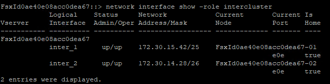
Establish cluster peering between ONTAP and FSx
To establish cluster peering between ONTAP clusters, a unique passphrase entered at the initiating ONTAP cluster must be confirmed in the other peer cluster.
-
Set up peering on the destination FSx cluster using the
cluster peer createcommand. When prompted, enter a unique passphrase that is used later on the source cluster to finalize the creation process.FSx-Dest::> cluster peer create -address-family ipv4 -peer-addrs source_intercluster_1, source_intercluster_2 Enter the passphrase: Confirm the passphrase:
-
At the source cluster, you can establish the cluster peer relationship using either ONTAP System Manager or the CLI. From ONTAP System Manager, navigate to Protection > Overview and select Peer Cluster.

-
In the Peer Cluster dialog box, fill out the required information:
-
Enter the passphrase that was used to establish the peer cluster relationship on the destination FSx cluster.
-
Select
Yesto establish an encrypted relationship. -
Enter the intercluster LIF IP address(es) of the destination FSx cluster.
-
Click Initiate Cluster Peering to finalize the process.
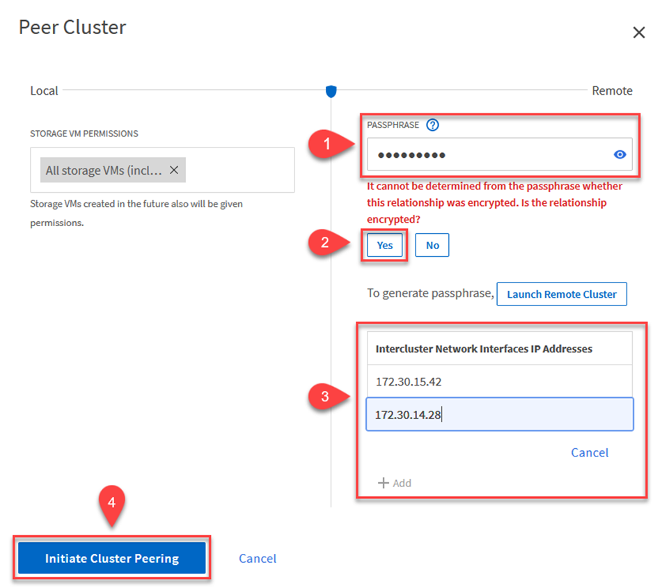
-
-
Verify the status of the cluster peer relationship from the FSx cluster with the following command:
FSx-Dest::> cluster peer show

Establish SVM peering relationship
The next step is to set up an SVM relationship between the destination and source storage virtual machines that contain the volumes that will be in SnapMirror relationships.
-
From the source FSx cluster, use the following command from the CLI to create the SVM peer relationship:
FSx-Dest::> vserver peer create -vserver DestSVM -peer-vserver Backup -peer-cluster OnPremSourceSVM -applications snapmirror
-
From the source ONTAP cluster, accept the peering relationship with either ONTAP System Manager or the CLI.
-
From ONTAP System Manager, go to Protection > Overview and select Peer Storage VMs under Storage VM Peers.

-
In the Peer Storage VM’s dialog box, fill out the required fields:
-
The source storage VM
-
The destination cluster
-
The destination storage VM

-
-
Click Peer Storage VMs to complete the SVM peering process.
Create a snapshot retention policy
SnapCenter manages retention schedules for backups that exist as snapshot copies on the primary storage system. This is established when creating a policy in SnapCenter. SnapCenter does not manage retention policies for backups that are retained on secondary storage systems. These policies are managed separately through a SnapMirror policy created on the secondary FSx cluster and associated with the destination volumes that are in a SnapMirror relationship with the source volume.
When creating a SnapCenter policy, you have the option to specify a secondary policy label that is added to the SnapMirror label of each snapshot generated when a SnapCenter backup is taken.
|
|
On the secondary storage, these labels are matched to policy rules associated with the destination volume for the purpose of enforcing retention of snapshots. |
The following example shows a SnapMirror label that is present on all snapshots generated as part of a policy used for daily backups of our SQL Server database and log volumes.

For more information on creating SnapCenter policies for a SQL Server database, see the SnapCenter documentation.
You must first create a SnapMirror policy with rules that dictate the number of snapshot copies to retain.
-
Create the SnapMirror Policy on the FSx cluster.
FSx-Dest::> snapmirror policy create -vserver DestSVM -policy PolicyName -type mirror-vault -restart always
-
Add rules to the policy with SnapMirror labels that match the secondary policy labels specified in the SnapCenter policies.
FSx-Dest::> snapmirror policy add-rule -vserver DestSVM -policy PolicyName -snapmirror-label SnapMirrorLabelName -keep #ofSnapshotsToRetain
The following script provides an example of a rule that could be added to a policy:
FSx-Dest::> snapmirror policy add-rule -vserver sql_svm_dest -policy Async_SnapCenter_SQL -snapmirror-label sql-ondemand -keep 15
Create additional rules for each SnapMirror label and the number of snapshots to be retained (retention period).
Create destination volumes
To create a destination volume on FSx that will be the recipient of snapshot copies from our source volumes, run the following command on FSx ONTAP:
FSx-Dest::> volume create -vserver DestSVM -volume DestVolName -aggregate DestAggrName -size VolSize -type DP
Create the SnapMirror relationships between source and destination volumes
To create a SnapMirror relationship between a source and destination volume, run the following command on FSx ONTAP:
FSx-Dest::> snapmirror create -source-path OnPremSourceSVM:OnPremSourceVol -destination-path DestSVM:DestVol -type XDP -policy PolicyName
Initialize the SnapMirror relationships
Initialize the SnapMirror relationship. This process initiates a new snapshot generated from the source volume and copies it to the destination volume.
FSx-Dest::> snapmirror initialize -destination-path DestSVM:DestVol
Deploy and configure Windows SnapCenter server on-premises.
Deploy Windows SnapCenter Server on premises
This solution uses NetApp SnapCenter to take application-consistent backups of SQL Server and Oracle databases. In conjunction with Veeam Backup & Replication for backing up virtual machine VMDKs, this provides a comprehensive disaster recovery solution for on-premises and cloud-based datacenters.
SnapCenter software is available from the NetApp support site and can be installed on Microsoft Windows systems that reside either in a domain or workgroup. A detailed planning guide and installation instructions can be found at the NetApp Documentation Center.
The SnapCenter software can be obtained at this link.
After it is installed, you can access the SnapCenter console from a web browser using https://Virtual_Cluster_IP_or_FQDN:8146.
After you log into the console, you must configure SnapCenter for backup SQL Server and Oracle databases.
Add storage controllers to SnapCenter
To add storage controllers to SnapCenter, complete the following steps:
-
From the left menu, select Storage Systems and then click New to begin the process of adding your storage controllers to SnapCenter.

-
In the Add Storage System dialog box, add the management IP address for the local on-premises ONTAP cluster and the username and password. Then click Submit to begin discovery of the storage system.

-
Repeat this process to add the FSx ONTAP system to SnapCenter. In this case, select More Options at the bottom of the Add Storage System window and click the check box for Secondary to designate the FSx system as the secondary storage system updated with SnapMirror copies or our primary backup snapshots.

For more information related to adding storage systems to SnapCenter, see the documentation at this link.
Add hosts to SnapCenter
The next step is adding host application servers to SnapCenter. The process is similar for both SQL Server and Oracle.
-
From the left menu, select Hosts and then click Add to begin the process of adding storage controllers to SnapCenter.
-
In the Add Hosts window, add the Host Type, Hostname, and the host system Credentials. Select the plug-in type. For SQL Server, select the Microsoft Windows and Microsoft SQL Server plug-in.

-
For Oracle, fill out the required fields in the Add Host dialog box and select the check box for the Oracle Database plug-in. Then click Submit to begin the discovery process and to add the host to SnapCenter.

Create SnapCenter policies
Policies establish the specific rules to be followed for a backup job. They include, but are not limited to, the backup schedule, replication type, and how SnapCenter handles backing up and truncating transaction logs.
You can access policies in the Settings section of the SnapCenter web client.
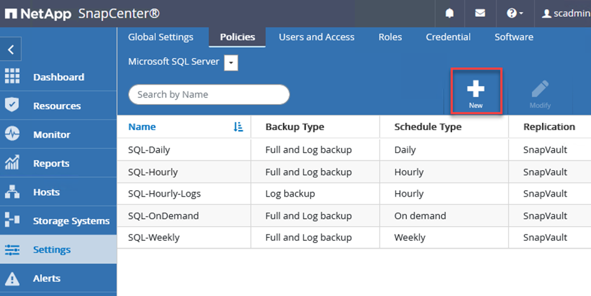
For complete information on creating policies for SQL Server backups, see the SnapCenter documentation.
For complete information on creating policies for Oracle backups, see the SnapCenter documentation.
Notes:
-
As you progress through the policy creation wizard, take special note of the Replication section. In this section you stipulate the types of secondary SnapMirror copies that you want taken during the backups process.
-
The “Update SnapMirror after creating a local Snapshot copy” setting refers to updating a SnapMirror relationship when that relationship exists between two storage virtual machines residing on the same cluster.
-
The “Update SnapVault after creating a local SnapShot copy” setting is used to update a SnapMirror relationship that exists between two separate cluster and between an on-premises ONTAP system and Cloud Volumes ONTAP or FSxN.
The following image shows the preceding options and how they look in the backup policy wizard.

Create SnapCenter Resource Groups
Resource Groups allow you to select the database resources you want to include in your backups and the policies followed for those resources.
-
Go to the Resources section in the left-hand menu.
-
At the top of the window, select the resource type to work with (In this case Microsoft SQL Server) and then click New Resource Group.
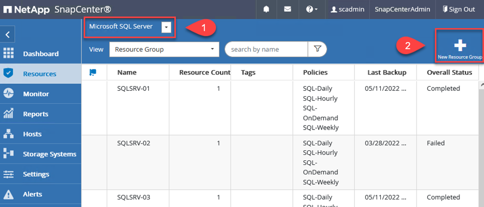
The SnapCenter documentation covers step-by-step details for creating Resource Groups for both SQL Server and Oracle databases.
For backing up SQL resources, follow this link.
For Backing up Oracle resources, follow this link.
Deploy and configure Veeam Backup Server
Veeam Backup & Replication software is used in the solution to back up our application virtual machines and archive a copy of the backups to an Amazon S3 bucket using a Veeam scale-out backup repository (SOBR). Veeam is deployed on a Windows server in this solution. For specific guidance on deploying Veeam, see the Veeam help Center Technical documentation.
Configure Veeam scale-out backup repository
After you deploy and license the software, you can create a scale-out backup repository (SOBR) as target storage for backup jobs. You should also include an S3 bucket as a backup of VM data offsite for disaster recovery.
See the following prerequisites before getting started.
-
Create an SMB file share on your on-premises ONTAP system as the target storage for backups.
-
Create an Amazon S3 bucket to include in the SOBR. This is a repository for the offsite backups.
Add ONTAP Storage to Veeam
First, add the ONTAP storage cluster and associated SMB/NFS filesystem as storage infrastructure in Veeam.
-
Open the Veeam console and log in. Navigate to Storage Infrastructure and then select Add Storage.

-
In the Add Storage wizard, select NetApp as the storage vendor and then select Data ONTAP.
-
Enter the management IP address and check the NAS Filer box. Click Next.
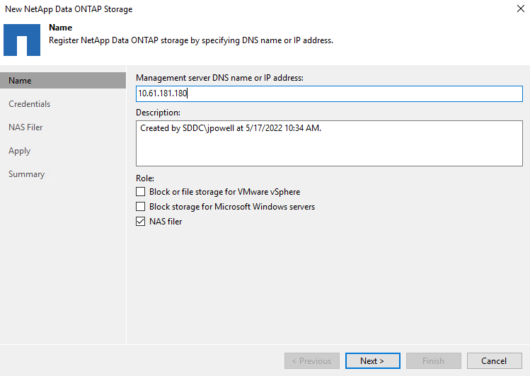
-
Add your credentials to access the ONTAP cluster.
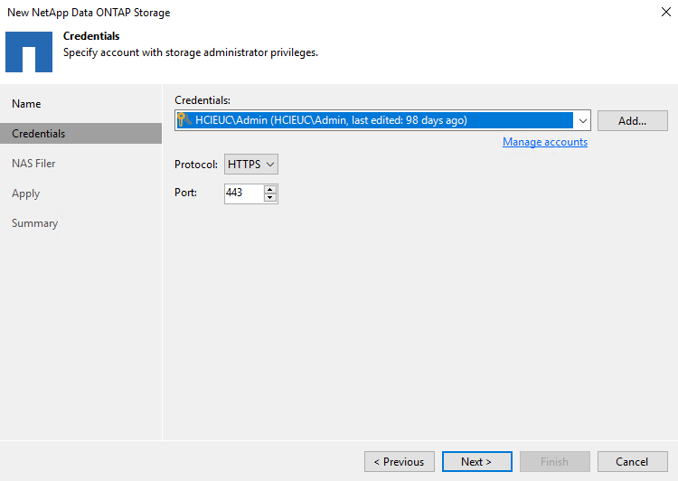
-
On the NAS Filer page choose the desired protocols to scan and select Next.

-
Complete the Apply and Summary pages of the wizard and click Finish to begin the storage discovery process. After the scan completes, the ONTAP cluster is added along with the NAS filers as available resources.

-
Create a backup repository using the newly discovered NAS shares. From Backup Infrastructure, select Backup Repositories and click the Add Repository menu item.

-
Follow all steps in the New Backup Repository Wizard to create the repository. For detailed information on creating Veeam Backup Repositories, see the Veeam documentation.

Add the Amazon S3 bucket as a backup repository
The next step is to add the Amazon S3 storage as a backup repository.
-
Navigate to Backup Infrastructure > Backup Repositories. Click Add Repository.

-
In the Add Backup Repository wizard, select Object Storage and then Amazon S3. This starts the New Object Storage Repository wizard.

-
Provide a name for your object storage repository and click Next.
-
In the next section, provide your credentials. You need an AWS Access Key and Secret Key.
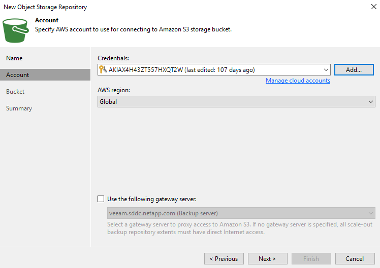
-
After the Amazon configuration loads, choose your datacenter, bucket, and folder and click Apply. Finally, click Finish to close out the wizard.
Create scale-out backup repository
Now that we have added our storage repositories to Veeam, we can create the SOBR to automatically tier backup copies to our offsite Amazon S3 object storage for disaster recovery.
-
From Backup Infrastructure, select Scale-out Repositories and then click the Add Scale-out Repository menu item.

-
In the New Scale-out Backup Repository provide a name for the SOBR and click Next.
-
For the Performance Tier, choose the backup repository that contains the SMB share residing on your local ONTAP cluster.

-
For the Placement Policy, choose either Data Locality or Performance based your requirements. Select next.
-
For Capacity Tier we extend the SOBR with Amazon S3 object storage. For the purposes of disaster recovery, select Copy Backups to Object Storage as Soon as They are Created to ensure timely delivery of our secondary backups.
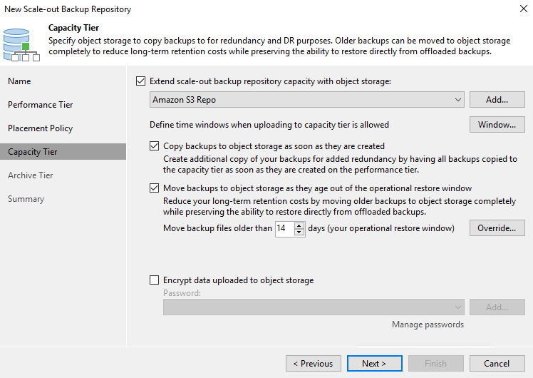
-
Finally, select Apply and Finish to finalize creation of the SOBR.
Create the scale-out backup repository jobs
The final step to configuring Veeam is to create backup jobs using the newly created SOBR as the backup destination. Creating backup jobs is a normal part of any storage administrator’s repertoire and we do not cover the detailed steps here. For more complete information on creating backup jobs in Veeam, see the Veeam Help Center Technical Documentation.
BlueXP backup and recovery tools and configuration
To conduct a failover of application VMs and database volumes to VMware Cloud Volume services running in AWS, you must install and configure a running instance of both SnapCenter Server and Veeam Backup and Replication Server. After the failover is complete, you must also configure these tools to resume normal backup operations until a failback to the on-premises datacenter is planned and executed.
Deploy secondary Windows SnapCenter Server
SnapCenter Server is deployed in the VMware Cloud SDDC or installed on an EC2 instance residing in a VPC with network connectivity to the VMware Cloud environment.
SnapCenter software is available from the NetApp support site and can be installed on Microsoft Windows systems that reside either in a domain or workgroup. A detailed planning guide and installation instructions can be found at the NetApp documentation center.
You can find the SnapCenter software at this link.
Configure secondary Windows SnapCenter Server
To perform a restore of application data mirrored to FSx ONTAP, you must first perform a full restore of the on-premises SnapCenter database. After this process is complete, communication with the VMs is reestablished and application backups can now resume using FSx ONTAP as the primary storage.
To achieve this, you must complete the following items on the SnapCenter Server:
-
Configure the computer name to be identical to the original on-premises SnapCenter Server.
-
Configure networking to communicate with VMware Cloud and the FSx ONTAP instance.
-
Complete the procedure to restore the SnapCenter database.
-
Confirm that SnapCenter is in Disaster Recovery mode to make sure that FSx is now the primary storage for backups.
-
Confirm that communication is reestablished with the restored virtual machines.
For more information on completing these steps, see to section "SnapCenter database Restore Process".
Deploy secondary Veeam Backup & Replication server
You can install the Veeam Backup & Replication server on a Windows server in the VMware Cloud on AWS or on an EC2 instance. For detailed implementation guidance, see the Veeam Help Center Technical Documentation.
Configure secondary Veeam Backup & Replication server
To perform a restore of virtual machines that have been backed up to Amazon S3 storage, you must install the Veeam Server on a Windows server and configure it to communicate with VMware Cloud, FSx ONTAP, and the S3 bucket that contains the original backup repository. It must also have a new backup repository configured on FSx ONTAP to conduct new backups of the VMs after they are restored.
To perform this process, the following items must be completed:
-
Configure networking to communicate with VMware Cloud, FSx ONTAP, and the S3 bucket containing the original backup repository.
-
Configure an SMB share on FSx ONTAP to be a new backup repository.
-
Mount the original S3 bucket that was used as part of the scale-out backup repository on premises.
-
After restoring the VM, establish new backup jobs to protect SQL and Oracle VMs.
For more information on restoring VMs using Veeam, see the section "Restore Application VMs with Veeam Full Restore".
SnapCenter database backup for disaster recovery
SnapCenter allows for the backup and recovery of its underlying MySQL database and configuration data for the purpose of recovering the SnapCenter server in the case of a disaster. For our solution, we recovered the SnapCenter database and configuration on an AWS EC2 instance residing in our VPC. For more information on this step, see this link.
SnapCenter backup prerequisites
The following prerequisites are required for SnapCenter backup:
-
A volume and SMB share created on the on-premises ONTAP system to locate the backed-up database and configuration files.
-
A SnapMirror relationship between the on-premises ONTAP system and FSx or CVO in the AWS account. This relationship is used for transporting the snapshot containing the backed-up SnapCenter database and configuration files.
-
Windows Server installed in the cloud account, either on an EC2 instance or on a VM in the VMware Cloud SDDC.
-
SnapCenter installed on the Windows EC2 instance or VM in VMware Cloud.
SnapCenter backup and restore process summary
-
Create a volume on the on-premises ONTAP system for hosting the backup db and config files.
-
Set up a SnapMirror relationship between on-premises and FSx/CVO.
-
Mount the SMB share.
-
Retrieve the Swagger authorization token for performing API tasks.
-
Start the db restore process.
-
Use the xcopy utility to copy the db and config file local directory to the SMB share.
-
On FSx, create a clone of the ONTAP volume (copied via SnapMirror from on-premises).
-
Mount the SMB share from FSx to EC2/VMware Cloud.
-
Copy the restore directory from the SMB share to a local directory.
-
Run the SQL Server restore process from Swagger.
Back up the SnapCenter database and configuration
SnapCenter provides a web client interface for executing REST API commands. For information on accessing the REST APIs through Swagger, see the SnapCenter documentation at this link.
Log into Swagger and obtain authorization token
After you have navigated to the Swagger page, you must retrieve an authorization token to initiate the database restore process.
-
Access the SnapCenter Swagger API web page at https://<SnapCenter Server IP>:8146/swagger/.

-
Expand the Auth section and click Try it Out.

-
In the UserOperationContext area, fill in the SnapCenter credentials and role and click Execute.

-
In the Response body below, you can see the token. Copy the token text for authentication when executing the backup process.

Perform a SnapCenter database backup
Next go to the Disaster Recovery area on the Swagger page to begin the SnapCenter backup process.
-
Expand the Disaster Recovery area by clicking it.

-
Expand the
/4.6/disasterrecovery/server/backupsection and click Try it Out.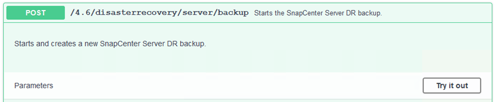
-
In the SmDRBackupRequest section, add the correct local target path and select Execute to start the backup of the SnapCenter database and configuration.
The backup process does not allow backing up directly to an NFS or CIFS file share. 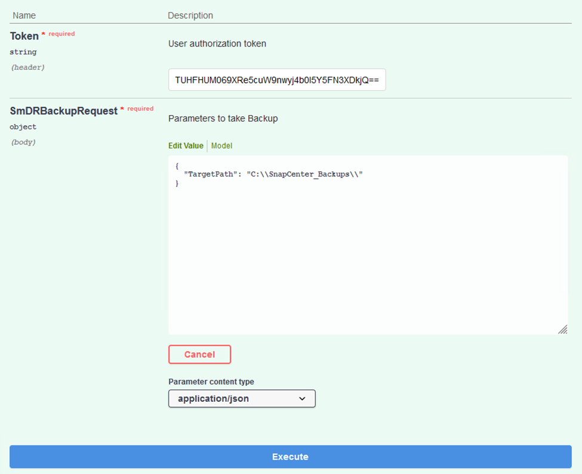
Monitor the backup job from SnapCenter
Log into SnapCenter to review log files when starting the database restore process. Under the Monitor section, you can view the details of the SnapCenter server disaster recovery backup.

Use XCOPY utility to copy the database backup file to the SMB share
Next you must move the backup from the local drive on the SnapCenter server to the CIFS share that is used to SnapMirror copy the data to the secondary location located on the FSx instance in AWS. Use xcopy with specific options that retain the permissions of the files.
Open a command prompt as Administrator. From the command prompt, enter the following commands:
xcopy <Source_Path> \\<Destination_Server_IP>\<Folder_Path> /O /X /E /H /K xcopy c:\SC_Backups\SnapCenter_DR \\10.61.181.185\snapcenter_dr /O /X /E /H /K
Failover
Disaster occurs at primary site
For a disaster that occurs at the primary on-premises datacenter, our scenario includes failover to a secondary site residing on Amazon Web Services infrastructure using VMware Cloud on AWS. We assume that the virtual machines and our on-premises ONTAP cluster are no longer accessible. In addition, both the SnapCenter and Veeam virtual machines are no longer accessible and must be rebuilt at our secondary site.
This section address failover of our infrastructure to the cloud, and we cover the following topics:
-
SnapCenter database restore. After a new SnapCenter server has been established, restore the MySQL database and configuration files and toggle the database into disaster recovery mode in order to allow the secondary FSx storage to become the primary storage device.
-
Restore the application virtual machines using Veeam Backup & Replication. Connect the S3 storage that contains the VM backups, import the backups, and restore them to VMware Cloud on AWS.
-
Restore the SQL Server application data using SnapCenter.
-
Restore the Oracle application data using SnapCenter.
SnapCenter database restore process
SnapCenter supports disaster recovery scenarios by allowing the backup and restore of its MySQL database and configuration files. This allows an administrator to maintain regular backups of the SnapCenter database at the on-premises datacenter and later restore that database to a secondary SnapCenter database.
To access the SnapCenter backup files on the remote SnapCenter server, complete the following steps:
-
Break the SnapMirror relationship from the FSx cluster, which makes the volume read/write.
-
Create a CIFS server (if necessary) and create a CIFS share pointing to the junction path of the cloned volume.
-
Use xcopy to copy the backup files to a local directory on the secondary SnapCenter system.
-
Install SnapCenter v4.6.
-
Ensure that SnapCenter server has the same FQDN as the original server. This is required for the db restore to be successful.
To start the restore process, complete the following steps:
-
Navigate to the Swagger API web page for the secondary SnapCenter server and follow the previous instructions to obtain an authorization token.
-
Navigate to the Disaster Recovery section of the Swagger page, select
/4.6/disasterrecovery/server/restore, and click Try it Out.
-
Paste in your authorization token and, in the SmDRResterRequest section, paste in the name of the backup and the local directory on the secondary SnapCenter server.
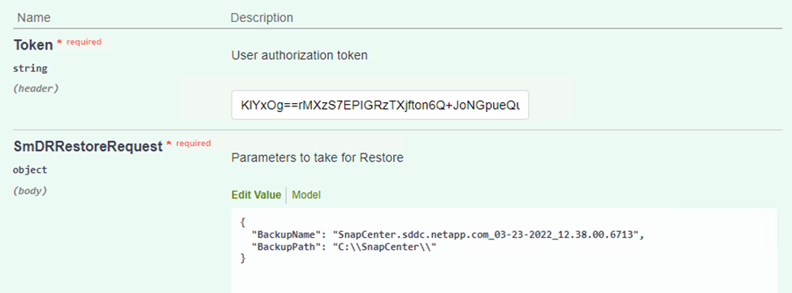
-
Select the Execute button to start the restore process.
-
From SnapCenter, navigate to the Monitor section to view the progress of the restore job.
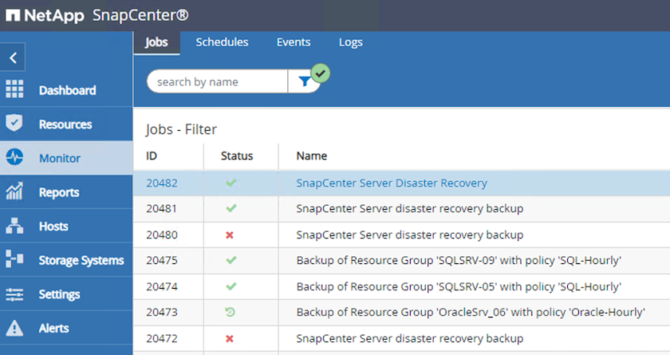

-
To enable SQL Server restores from secondary storage, you must toggle the SnapCenter database into Disaster Recovery mode. This is performed as a separate operation and initiated on the Swagger API web page.
-
Navigate to the Disaster Recovery section and click
/4.6/disasterrecovery/storage. -
Paste in the user authorization token.
-
In the SmSetDisasterRecoverySettingsRequest section, change
EnableDisasterRecovertotrue. -
Click Execute to enable disaster recovery mode for SQL Server.

See comments regarding additional procedures.
-
Restore application VMs with Veeam full restore
Create a backup repository and import backups from S3
From the secondary Veeam server, import the backups from S3 storage and restore the SQL Server and Oracle VMs to your VMware Cloud cluster.
To import the backups from the S3 object that was part of the on-premises scale-out backup repository, complete the following steps:
-
Go to Backup Repositories and click Add Repository in the top menu to launch the Add Backup Repository wizard. On the first page of the wizard, select Object Storage as the backup repository type.
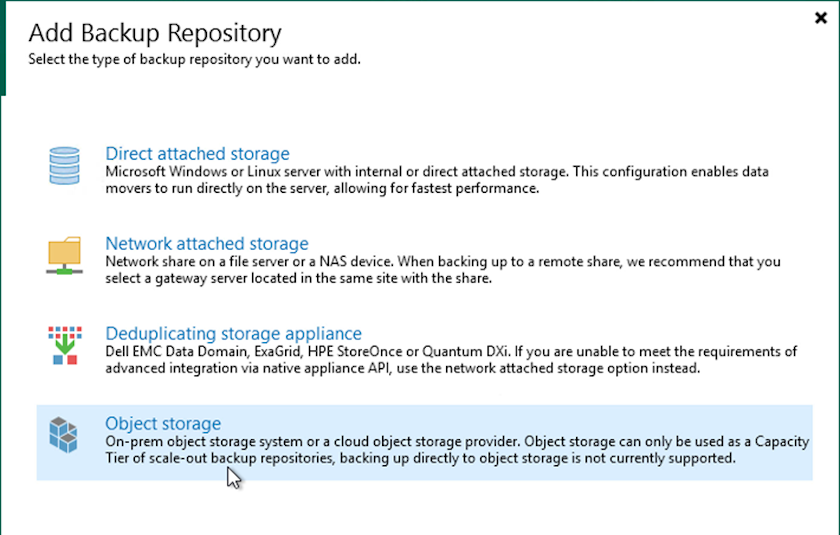
-
Select Amazon S3 as the Object Storage type.

-
From the list of Amazon Cloud Storage Services, select Amazon S3.

-
Select your pre-entered credentials from the drop-down list or add a new credential for accessing the cloud storage resource. Click Next to continue.

-
On the Bucket page, enter the data center, bucket, folder, and any desired options. Click Apply.
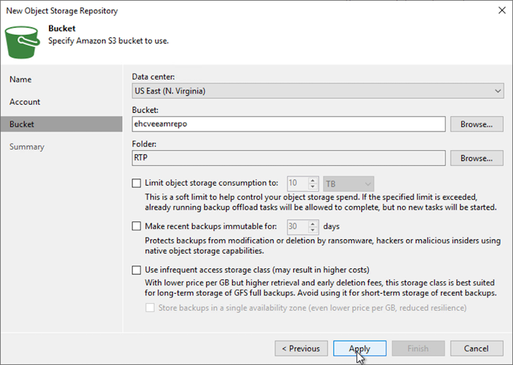
-
Finally, select Finish to complete the process and add the repository.
Import backups from S3 object storage
To import the backups from the S3 repository that was added in the previous section, complete the following steps.
-
From the S3 backup repository, select Import Backups to launch the Import Backups wizard.
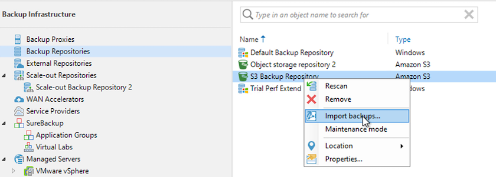
-
After the database records for the import have been created, select Next and then Finish at the summary screen to start the import process.

-
After the import is complete, you can restore VMs into the VMware Cloud cluster.

Restore application VMs with Veeam full restore to VMware Cloud
To restore SQL and Oracle virtual machines to the VMware Cloud on AWS workload domain/cluster, complete the following steps.
-
From the Veeam Home page, select the object storage containing the imported backups, select the VMs to restore, and then right click and select Restore Entire VM.

-
On the first page of the Full VM Restore wizard, modify the VMs to backup if desired and select Next.

-
On the Restore Mode page, select Restore to a New Location, or with Different Settings.

-
On the host page, select the Target ESXi host or cluster to restore the VM to.

-
On the Datastores page, select the target datastore location for both the configuration files and hard disk.
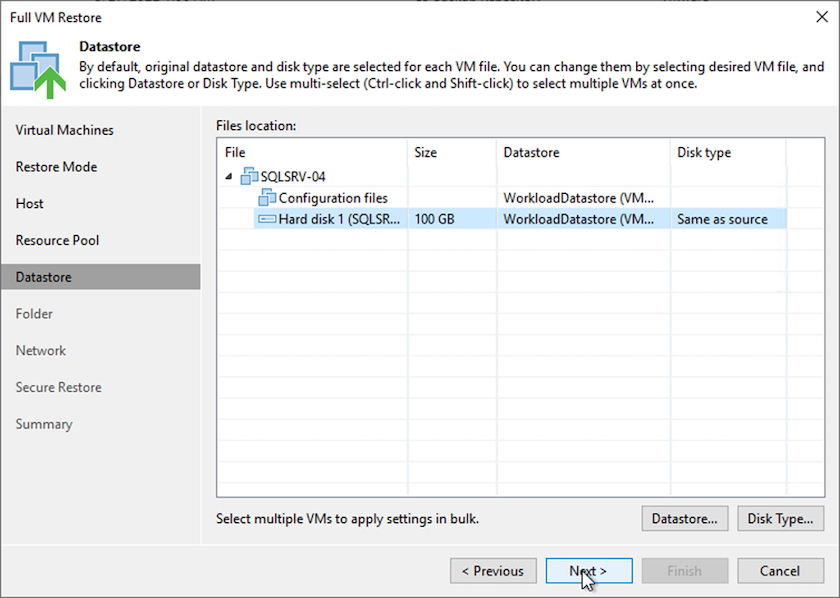
-
On the Network page, map the original networks on the VM to the networks in the new target location.
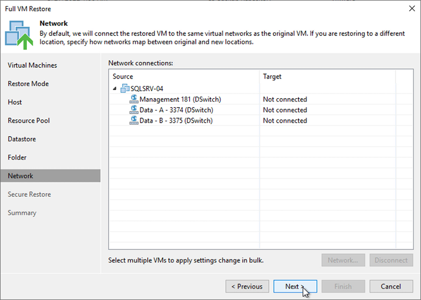

-
Select whether to scan the restored VM for malware, review the summary page, and click Finish to start the restore.
Restore SQL Server application data
The following process provides instructions on how to recover a SQL Server in VMware Cloud Services in AWS in the event of a disaster that renders the on-premises site inoperable.
The following prerequisites are assumed to be complete in order to continue with the recovery steps:
-
The Windows Server VM has been restored to the VMware Cloud SDDC using Veeam Full Restore.
-
A secondary SnapCenter server has been established and SnapCenter database restore and configuration has been completed using the steps outlined in the section "SnapCenter backup and restore process summary."
VM: Post restore configuration for SQL Server VM
After the restore of the VM is complete, you must configure networking and other items in preparation for rediscovering the host VM within SnapCenter.
-
Assign new IP addresses for Management and iSCSI or NFS.
-
Join the host to the Windows domain.
-
Add the hostnames to DNS or to the hosts file on the SnapCenter server.
|
|
If the SnapCenter plug-in was deployed using domain credentials different than the current domain, you must change the Log On account for the Plug-in for Windows Service on the SQL Server VM. After changing the Log On account, restart the SnapCenter SMCore, Plug-in for Windows, and Plug-in for SQL Server services. |
|
|
To automatically rediscover the restored VMs in SnapCenter, the FQDN must be identical to the VM that was originally added to the SnapCenter on premises. |
Configure FSx storage for SQL Server restore
To accomplish the disaster recovery restore process for a SQL Server VM, you must break the existing SnapMirror relationship from the FSx cluster and grant access to the volume. To do so, complete the following steps.
-
To break the existing SnapMirror relationship for the SQL Server database and log volumes, run the following command from the FSx CLI:
FSx-Dest::> snapmirror break -destination-path DestSVM:DestVolName
-
Grant access to the LUN by creating an initiator group containing the iSCSI IQN of the SQL Server Windows VM:
FSx-Dest::> igroup create -vserver DestSVM -igroup igroupName -protocol iSCSI -ostype windows -initiator IQN
-
Finally, map the LUNs to the initiator group that you just created:
FSx-Dest::> lun mapping create -vserver DestSVM -path LUNPath igroup igroupName
-
To find the path name, run the
lun showcommand.
Set up the Windows VM for iSCSI access and discover the file systems
-
From the SQL Server VM, set up your iSCSI network adapter to communicate on the VMware Port Group that has been established with connectivity to the iSCSI target interfaces on your FSx instance.
-
Open the iSCSI Initiator Properties utility and clear out the old connectivity settings on the Discovery, Favorite Targets, and Targets tabs.
-
Locate the IP address(es) for accessing the iSCSI logical interface on the FSx instance/cluster. This can be found in the AWS console under Amazon FSx > ONTAP > Storage Virtual Machines.

-
From the Discovery tab, click Discover Portal and enter the IP addresses for your FSx iSCSI targets.


-
On the Target tab, click Connect, select Enable Multi-Path if appropriate for your configuration and then click OK to connect to the target.

-
Open the Computer Management utility and bring the disks online. Verify that they retain the same drive letters that they previously held.

Attach the SQL Server databases
-
From the SQL Server VM, open Microsoft SQL Server Management Studio and select Attach to start the process of connecting to the database.

-
Click Add and navigate to the folder containing the SQL Server primary database file, select it, and click OK.

-
If the transaction logs are on a separate drive, choose the folder that contains the transaction log.
-
When finished, click OK to attach the database.

Confirm SnapCenter communication with SQL Server Plug-in
With the SnapCenter database restored to its previous state, it automatically rediscovers the SQL Server hosts. For this to work correctly, keep in mind the following prerequisites:
-
SnapCenter must be placed in Disaster Recover mode. This can be accomplished through the Swagger API or in Global Settings under Disaster Recovery.
-
The FQDN of the SQL Server must be identical to the instance that was running in the on-premises datacenter.
-
The original SnapMirror relationship must be broken.
-
The LUNs containing the database must be mounted to the SQL Server instance and the database attached.
To confirm that SnapCenter is in Disaster Recovery mode, navigate to Settings from within the SnapCenter web client. Go to the Global Settings tab and then click Disaster Recovery. Make sure that the Enable Disaster Recovery checkbox is enabled.

Restore Oracle application data
The following process provides instructions on how to recover Oracle application data in VMware Cloud Services in AWS in the event of a disaster that renders the on-premises site inoperable.
Complete the following prerequisites to continue with the recovery steps:
-
The Oracle Linux server VM has been restored to the VMware Cloud SDDC using Veeam Full Restore.
-
A secondary SnapCenter server has been established and the SnapCenter database and configuration files have been restored using the steps outlined in this section "SnapCenter backup and restore process summary."
Configure FSx for Oracle restore – Break the SnapMirror relationship
To make the secondary storage volumes hosted on the FSxN instance accessible to the Oracle servers, you must first break the existing SnapMirror relationship.
-
After logging into the FSx CLI, run the following command to view the volumes filtered by the correct name.
FSx-Dest::> volume show -volume VolumeName*

-
Run the following command to break the existing SnapMirror relationships.
FSx-Dest::> snapmirror break -destination-path DestSVM:DestVolName

-
Update the junction-path in the Amazon FSx web client:

-
Add the junction path name and click Update. Specify this junction path when mounting the NFS volume from the Oracle server.

Mount NFS volumes on Oracle Server
In Cloud Manager, you can obtain the mount command with the correct NFS LIF IP address for mounting the NFS volumes that contain the Oracle database files and logs.
-
In Cloud Manager, access the list of volumes for your FSx cluster.
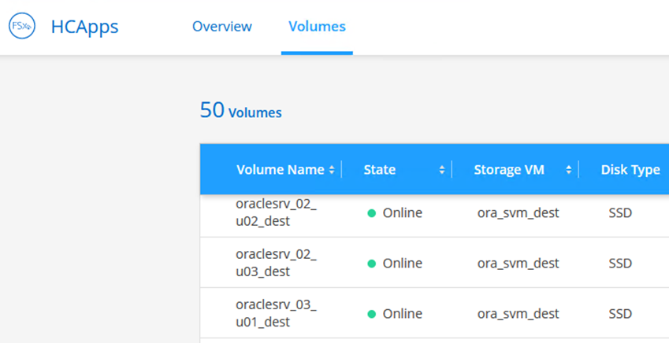
-
From the action menu, select Mount Command to view and copy the mount command to be used on our Oracle Linux server.


-
Mount the NFS file system to the Oracle Linux Server. The directories for mounting the NFS share already exist on the Oracle Linux host.
-
From the Oracle Linux server, use the mount command to mount the NFS volumes.
FSx-Dest::> mount -t oracle_server_ip:/junction-path
Repeat this step for each volume associated with the Oracle databases.
To make the NFS mount persistent upon rebooting, edit the /etc/fstabfile to include the mount commands. -
Reboot the Oracle server. The Oracle databases should start up normally and be available for use.
Failback
Upon successful completion of the failover process outlined in this solution, SnapCenter and Veeam resume their backup functions running in AWS, and FSx for ONTAP is now designated as primary storage with no existing SnapMirror relationships with the original on-premises datacenter. After normal function has resumed on premises, you can use a process identical to the one outlined in this documentation to mirror data back to the on-premises ONTAP storage system.
As is also outlined in this documentation, you can configure SnapCenter to mirror the application data volumes from FSx for ONTAP to an ONTAP storage system residing on premises. Similarly, you can configure Veeam to replicate backup copies to Amazon S3 using a scale-out backup repository so that those backups are accessible to a Veeam backup server residing at the on-premises datacenter.
Failback is outside the scope of this documentation, but failback differs little from the detailed process outlined here.
Conclusion
The use case presented in this documentation focuses on proven disaster recovery technologies that highlight the integration between NetApp and VMware. NetApp ONTAP storage systems provide proven data-mirroring technologies that allow organizations to design disaster recovery solutions that span on-premises and ONTAP technologies residing with the leading cloud providers.
FSx for ONTAP on AWS is one such solution that allows for seamless integration with SnapCenter and SyncMirror for replicating application data to the cloud. Veeam Backup & Replication is another well-known technology that integrates well with NetApp ONTAP storage systems and can provide failover to vSphere- native storage.
This solution presented a disaster recovery solution using guest connect storage from an ONTAP system hosting SQL Server and Oracle application data. SnapCenter with SnapMirror provides an easy-to-manage solution for protecting application volumes on ONTAP systems and replicating them to FSx or CVO residing in the cloud. SnapCenter is a DR-enabled solution for failing over all application data to VMware Cloud on AWS.
Where to find additional information
To learn more about the information that is described in this document, review the following documents and/or websites:
-
Links to solution documentation